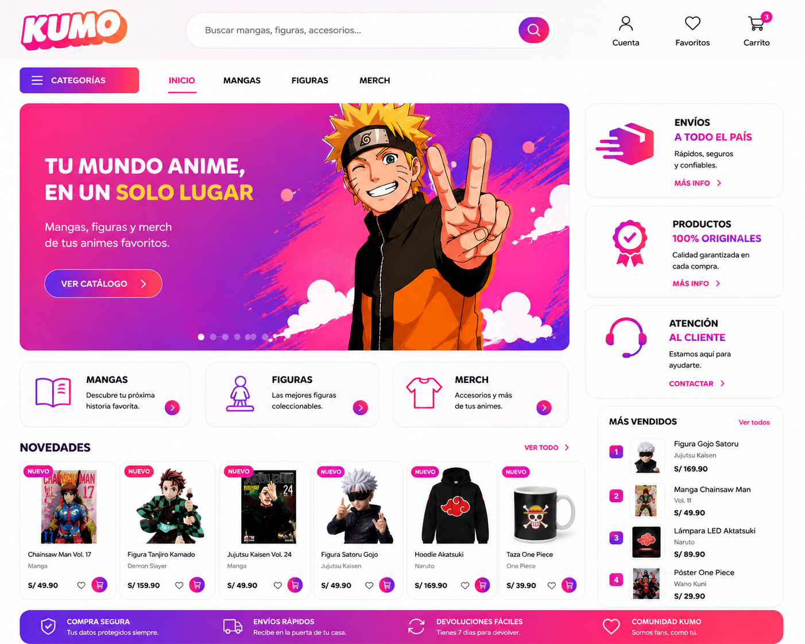
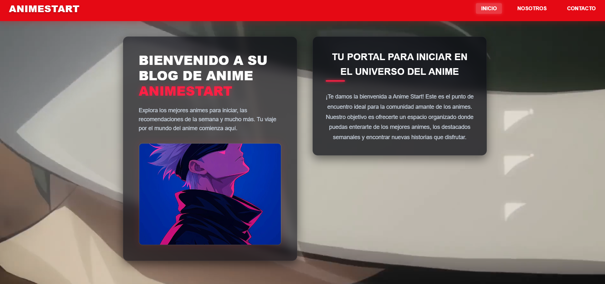
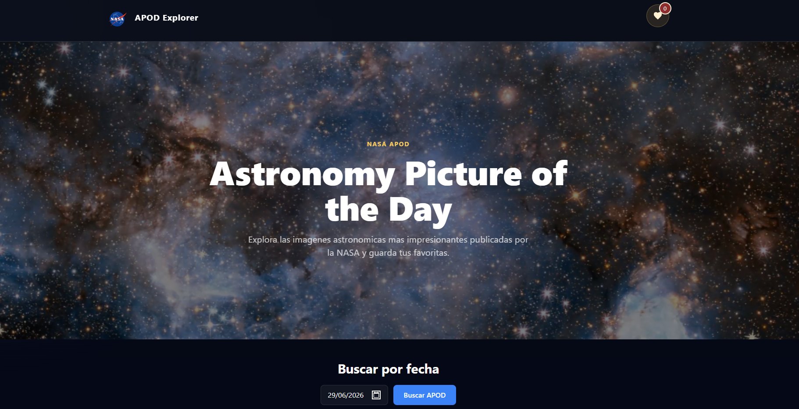
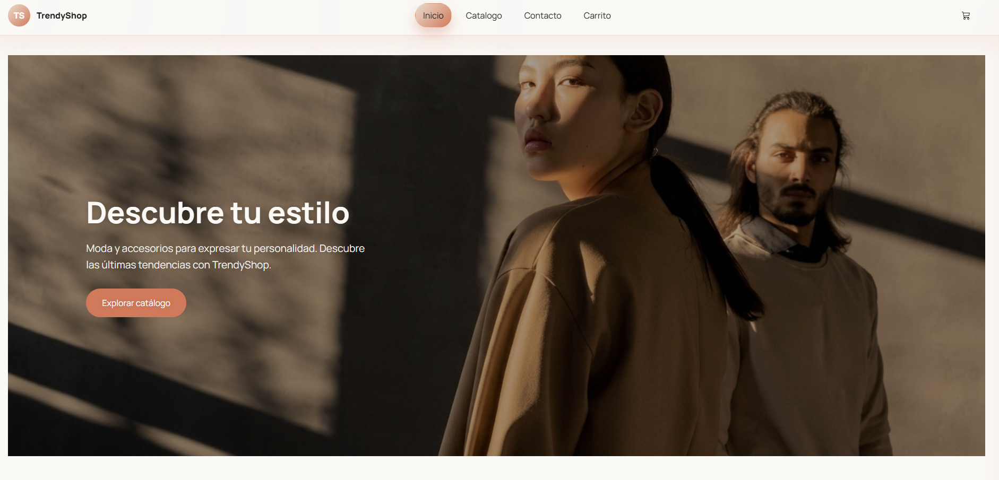

Desarrolladora Full-Stack
Alexandra
Hola, soy
Alexandra
Castro
Desarrollo aplicaciones web enfocadas en la usabilidad, combinando la lógica técnica con interfaces visualmente atractivas y accesibles.
01
Sobre mí
Soy desarrolladora Full-Stack en formación, apasionada por crear experiencias web intuitivas y funcionales.
Actualmente busco mi primera oportunidad profesional donde pueda seguir aprendiendo, aportar valor y crecer como desarrolladora.
Mi interés por el desarrollo de software comenzó cuando descubrí que una misma idea puede materializarse de muchas formas diferentes. Me llamó la atención cómo el diseño de una interfaz puede hacer que una aplicación no solo sea funcional, sino también atractiva, intuitiva y agradable para quienes la utilizan.
Antes de dedicarme al desarrollo, trabajé en atención al cliente y soporte de operaciones digitales, donde fortalecí habilidades como la comunicación, el análisis y la resolución de problemas. Esa experiencia me enseñó a comprender las necesidades de las personas y empresas, hoy la aplico al crear aplicaciones pensadas para ofrecer una mejor experiencia de usuario.
Ver currículum completo →
02
Habilidades
Estas son algunas de las tecnologías y habilidades que he desarrollado durante mi formación y experiencia en proyectos personales y colaborativos.
Habilidades Técnicas
Bootstrap
VS Code
SCRUM
Figma
Java
JavaScript
CSS
HTML
Spring Boot
MySQL
Git
GitHub
IntelliJ
phpMyAdmin
Habilidades Blandas
Resolución de problemas
Orientación práctica para diagnosticar y solucionar necesidades técnicas y de negocio.
Trabajo en equipo
Experiencia colaborando bajo metodologías ágiles como SCRUM en proyectos multidisciplinarios.
Adaptabilidad
Capacidad de aprendizaje continuo y ajuste rápido a nuevas tecnologías y entornos.
Comunicación efectiva
Atención al cliente y manejo claro de información en entornos exigentes y multiculturales.
03
Proyectos destacados
Estos son algunos de los proyectos que mejor representan mi crecimiento como desarrolladora, desde aplicaciones web hasta proyectos construidos con Java y diseño de interfaces.

Proyecto colaborativo
AnimeStart
Aplicación web desarrollada bajo metodología SCRUM, donde participé en la construcción del Front-End y la interfaz de usuario.

API REST
NASA API Explorer
Aplicación web que integra la API pública de la NASA para visualizar contenido espacial en tiempo real, aplicando consumo de APIs REST, manipulación del DOM y peticiones asíncronas con JavaScript.

Hackathon
Trendy Shop
Plataforma de comercio electrónico desarrollada durante una hackathon, donde colaboré en el desarrollo del Front-End y la construcción de una interfaz moderna, responsiva y centrada en la experiencia del usuario, trabajando en equipo con Git y GitHub.
04
Currículum
Conoce más sobre mi formación académica, experiencia, certificaciones y habilidades profesionales.
05
Hablemos.
¿Tienes un proyecto o una oportunidad en mente? Escríbeme y te responderé pronto.
Email
castroyenny74@gmail.com
Ubicación
Bogotá D.C, Colombia